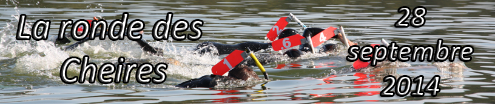

A fournir imperativement:
7€ par relayeur et 10€ nageur, à régler sur place lors de la remise des dossards
Licence en cours FFESSM
Certificat médical
Règlement
- Ceux qui concourront pour un classement des 3 heures devront présenter leur licence de compétition.
La compétition est ouverte à tous les licenciés de la FFESSM de l’année en cours ayant un certificat médical de moins d’un an.
-
Inscription et vérification des licences et certificats médicaux aura lieu à partir de 8 heures 30 sur place.
-
Chaque relais sera constitué de 2 ou 3 nageurs qui devront chacun se relayer sur une boucle d’un kilomètre. Les équipes peuvent indifféremment être mixtes et constituées de nageurs avec ou sans support mais ayant un tuba pour accrocher le dossard. A la fin de la course ce sera le nombre de tours complètement effectués qui compteront pour le classement.
-
Les nageurs des 3 heures ne pourront pas être équipier d’un relais.
-
Les nageurs du 3 h devront se munir de leur propre ravitaillement pendant la course et le déposer avant sur un ponton. Ils effectueront des boucles d’1 km et à la fin des 3 heures ( coup de corne de brume) devront rester sur place et attendre le bateau qui devra relever leur position.
-
Tout participant autorise expressément les organisateurs à utiliser sous n’importe qu’elle forme de support, les photos sur lesquelles, il pourrait apparaître.
-
Les équipes et les nageurs seront classées si restitution des dossards.
-
La participation à la course implique l’acceptation pleine et entière du présent règlement.
Programme
- 8 heures 30 inscription, remise des dossards, contrôle des licences et des certificats médicaux,
-
9 h 30 heures briefing et instructions sur la course,
-
10 heures départs.
| Nous retrouver:
Agrandir le plan
| Base de voile
Lac Aydat Sauteyras
63970 AYDAT
Utilisez les boutons + et - à droite de la carte pour modifier le niveau de zoom.
Si vous désirez connaitre la route en détail ou depuis un autre point, cliquez sur "Agrandir le plan". Vous pourrez modifier votre point de départ en conséquence. |
Possibilités de logement au camping des Cheires